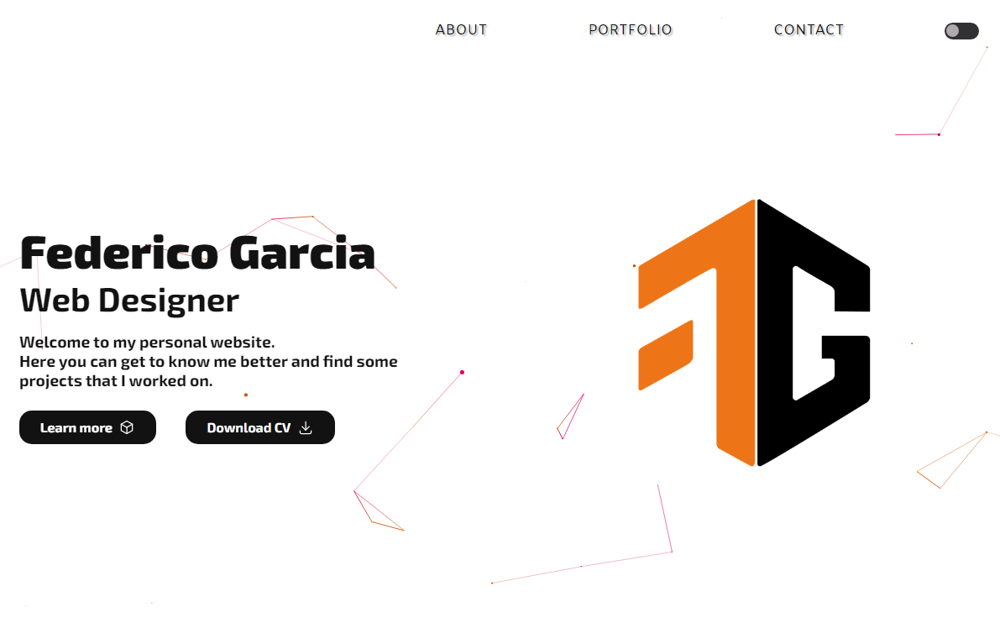
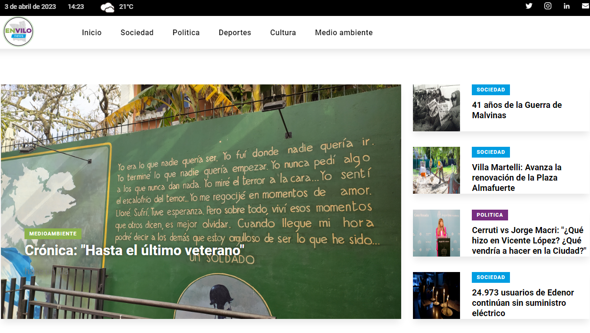

Federico Garcia
Web Designer
Welcome to my personal website.
Here you can get to know me better and find some projects that I worked on.

My name is Federico Garcia, I'm a Full Stack Developer from Argentina
If there is one thing I love about web development, it's the infinite amount of possibilities that exist in creating. In my 3 years of studying I've been through different courses and universities where I learnt about Front End and Back End and I can proudly say I can work with both.
Here you can see some of the technologies and tools that I use:


These are some of the projects that I've worked on:

